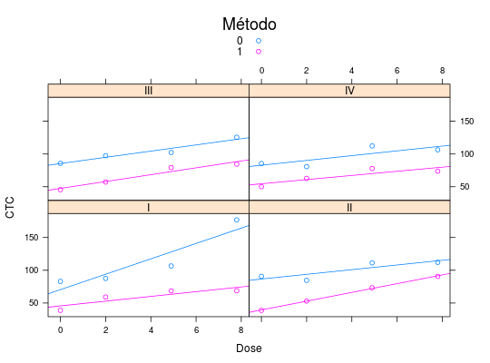

Valores de CTC Direta e Indireta
O experimento foi realizado em quatro blocos, sendo planejado para estudar o efeito da calagem sobre a CTC (Capacidade de Troca Catiônica) do solo medida por dois métodos diferentes. Os valores de CTC foram medidos 18 meses após a calagem incorporada ao solo, na profundidade de 5 a 10 cm, segundo a dose de calcário.
Format
Um data.frame de 32 linhas e 4 colunas, em que
bloco- Fator que indica a qual bloco a amostra pertence, usado para controle de variação.
dose- Indica a dose de calcário usada na referida observação, medida em toneladas por hectare (t/ha).
metodo- Fator que indica o método para determinação da CTC, direto (1) ou indireto (0).
ctc- É o valor observado de CTC, medido em \(mmol_{c}/kg\).
Source
DEMÉTRIO; ZOCCHI (2011), Tabela 1.5 pág. 12.
Details
Na análise inicial do estudo do estudo foi detectada a
presença de um dado discrepante (177,00) correspondente ao
bloco I, dose 7,80 e metodo indireto. Em
conversa com o pesquisador verificou-se que se tratava de um erro
na transcrição dos dados e que o valor correto seria
124,00. Neste conjunto de dados manteve-se o valor discrepante
para efeitos didáticos.
Examples
data(DemetrioTb1.5)#> Warning: data set ‘DemetrioTb1.5’ not foundstr(DemetrioTb1.5)#> 'data.frame': 32 obs. of 4 variables: #> $ bloco : Factor w/ 4 levels "I","II","III",..: 1 2 3 4 1 2 3 4 1 2 ... #> $ dose : num 0 0 0 0 2 2 2 2 4.9 4.9 ... #> $ metodo: Factor w/ 2 levels "0","1": 1 1 1 1 1 1 1 1 1 1 ... #> $ ctc : num 83 90.7 85.8 85.5 87.6 ...library(lattice) xyplot(ctc ~ dose | bloco, groups = metodo, data = DemetrioTb1.5, xlab = "Dose", ylab = "CTC", type = c("p", "r"), auto.key = list(space = "top", title = "Método"))# Corrigindo dado, conforme erro verificado pelo pesquisador select <- with(DemetrioTb1.5, bloco == 1 & dose == 7.8 & metodo == 0) DemetrioTb1.5$ctc[select] <- 124 xyplot(ctc ~ dose | bloco, groups = metodo, data = DemetrioTb1.5, xlab = "Dose", ylab = "CTC", type = c("p", "r"), auto.key = list(space = "top", title = "Método"))